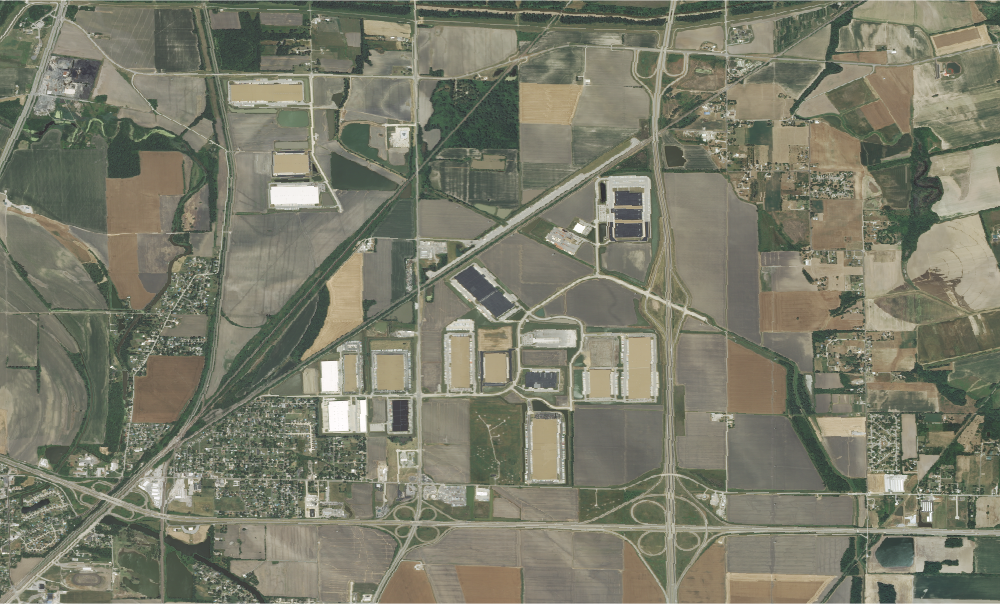
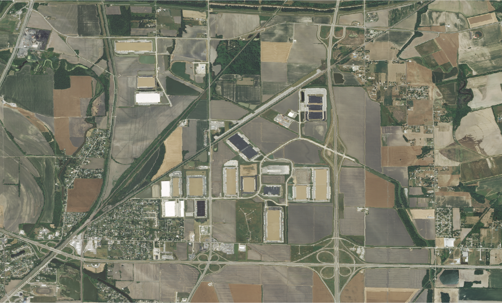

Create four HTML documents displaying the changes in the landscape using the exported PNG images from GEE using the NAIP dataset.
Another page should use buttons to select among three images (bonus if you can also add text that changes as you change the image).
A growing warehouse district near St. Louis, MO in 2007.
 
